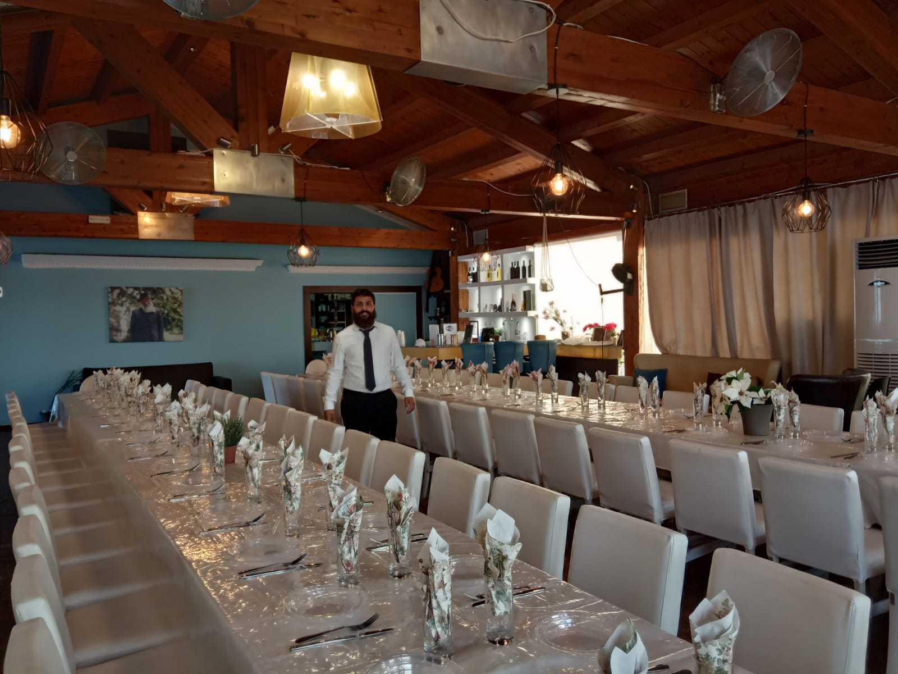

מדריך למטייל הדתי שמחפש לחיות את החוויה האולטימטיבית בטיולים בחו"ל.
אנו מתמקדים בספקטרום הדתי, מציעים פעילויות מסוגננות עם דגש על מקומות דתיים ומיוחדים בכל יעד.
באמצעות המדריך שלנו, תוכלו למצוא מידע רב על בתי כנסת, מסעדות כשרות, ומקומות נוספים שיעשו את החוויה שלכם ייחודית.
אנו מחויבים לספק מידע מעודכן ושימור על המסורת הדתית בטיולים שלנו.
הטיולים שלנו מעניקים אפשרות להתעמק בהכרות עם המקומות הדתיים והתרבויות המארחות,
תכננו את הטיול שלכם באמצעות המדריך שלנו ותהיו מוכנים להתרגש מחוויות חדשות וייחודיות.
אנו נשמח לשמוע על החוויות שלכם ולקבל משוב. אל תהססו ליצור קשר עם שאלות או בקשות למידע נוסף.
מי אנחנו?
אנו צוות מורכב ממטיילים דתיים שאוהבים לחלוק את החוויות הייחודיות שלנו ולהפוך טיולים לחוויות דתיות מושלמות.
המדריך שלנו מתמקד בספקטרום הדתי ומציע פעילויות מסוגננות במקומות דתיים בכל יעד.
אנו מחויבים לשמור על מסורת דתית ולספק מידע מעודכן.
כיצד אנו עובדים?
המדריך שלנו מספק מידע מקיף על בתי כנסת, מסעדות כשרות ומקומות מיוחדים בכל יעד.
.נפרט את הפעילויות הדתיות ונספק המלצות לתכנון הטיול שלך.
לכו אתנו,ותגלו את החוויות הדתיות והתרבויות המארחות
תהליכי עבודה:
1. מחקר יסודי: אנו בודקים ומחפשים את המקומות הדתיים המרתקים ביותר בכל יעד.
2. סינון ובדיקה: אנו מסננים את המקומות והפעילויות, ומבדילים את החוויות המיוחדות והמקומות האותנטיים.
3. עדכון קבוע: אנו שומרים על מידע עדכני ובדיקת המלצות באופן תדיר.